Gemini Log-Phase Route Sweep
Generated 2026-06-21 09:14 from the local sweep artifacts.
Executive Summary
- 1 lab-matrix runs completed cleanly. The sweep produced 24 pondered comparison rows across gemini-3.1-pro-preview, plus per-run JSON, trace, and matrix artifacts.
- gemini ran as the focused comparison lane. Mean runtime was 791.5s and pondered answers averaged 513 chars.
- Alignment lift is a triage signal, not a verdict. Mean query-alignment delta for gemini was 0.021; read that alongside answer length, PCA position, and the raw output atlas.
- Output closure is now a first-class experimental axis. Best final marker rate in this run was
log_skeleton_closureat 0%; read it with the finish-reason chart and raw output atlas. - Log-phase routing is now isolated from final-answer routing. Best skeleton-complete route was
low_inherit_no_rescue__final_low_2048at 100%, with final length rate 0%; compare it with rescue-used rate, final finish rate, and raw ponder logs. - Dose ladder metrics are now part of the report. The strongest alignment row was
factsat dose 512 with alignment delta 0.145; verify it against origin drift, leakage, and the raw text.
Runtime and answer length frame the closure contract
Runtime is part of the experimental surface. This focused run uses one provider lane, so runtime is mainly a planning handle for larger closure sweeps.
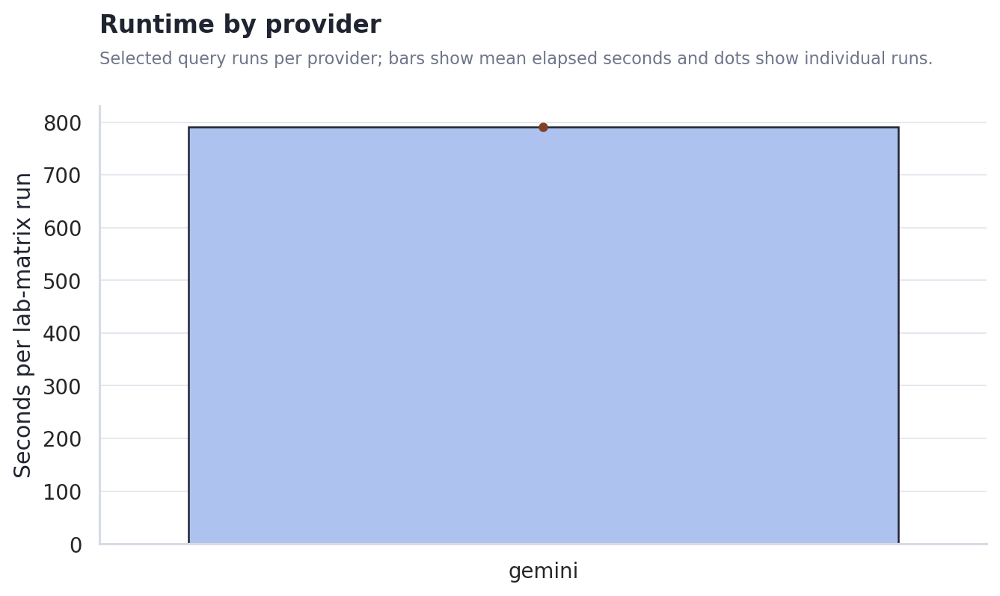
The output-length gap shapes the first read. Stance, metaphor-density, and hash-alignment heuristics become easier to interpret when answer lengths are comparable; when they are not, the raw output atlas and PCA view matter more than a single scalar.
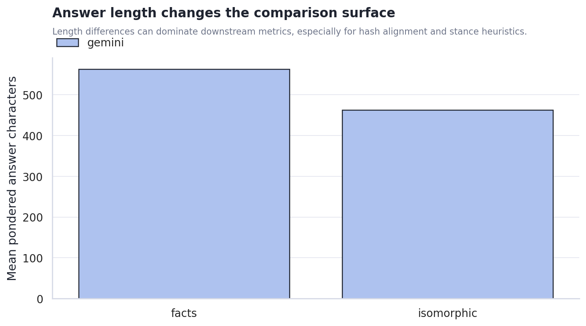
Scaffold condition changes the metric surface, but not all changes are meaningful yet
Alignment deltas moved by condition. The chart shows where each scaffold condition pulled answers closer to or farther from the original query surface. This should guide the next experiment design rather than be read as a final claim about model cognition.
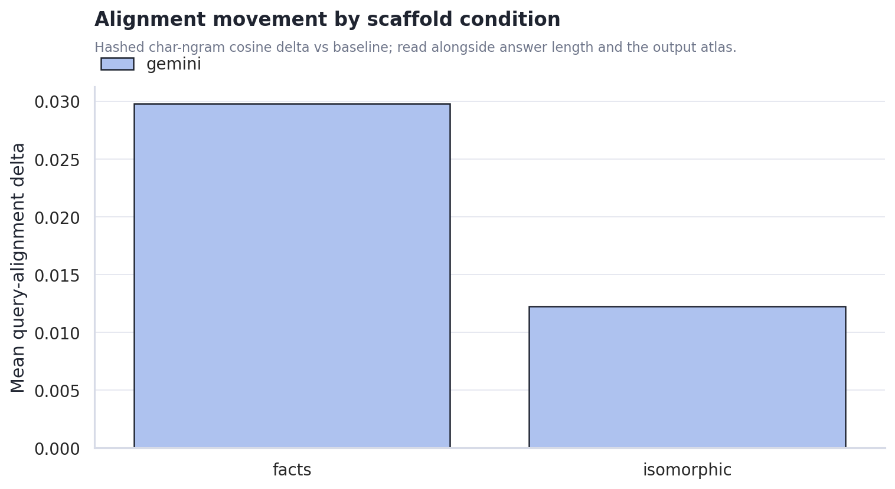
Cost rises where the machine asks the model to synthesize a new scaffold. The plain associative and random controls are cheaper; facts and isomorphic require extra generation and larger final contexts.
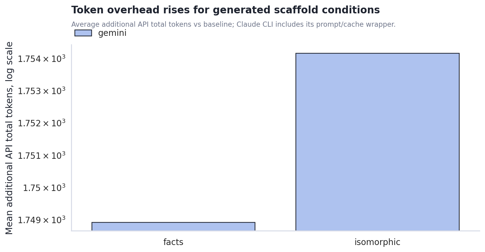
Gemini Output Closure Contract
The closure contract splits the problem into log closure and final-answer closure. This helps distinguish a scaffold that fails while producing the ponder log from one that fails when landing the final answer.
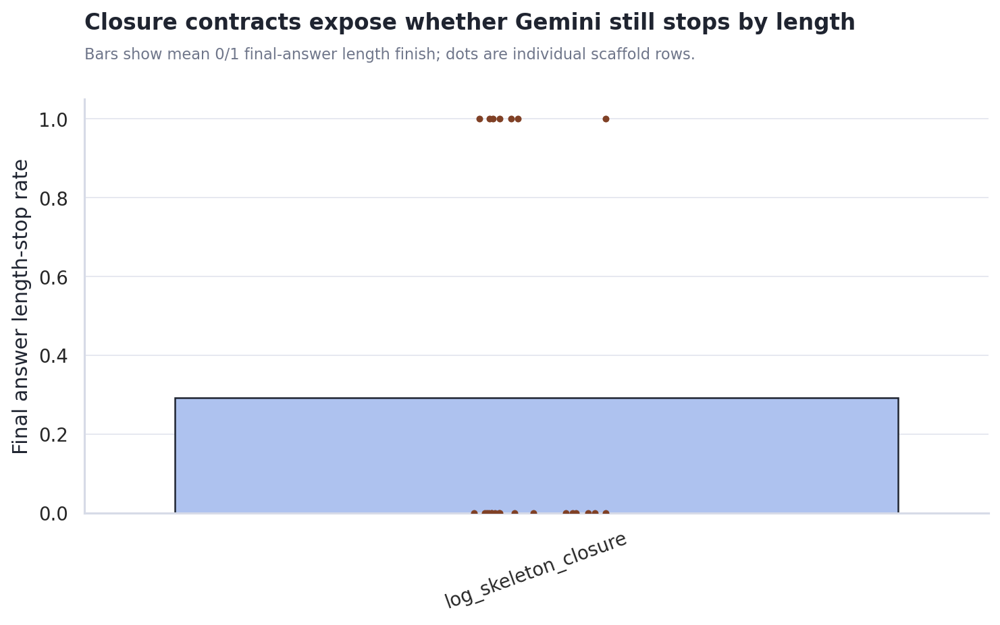
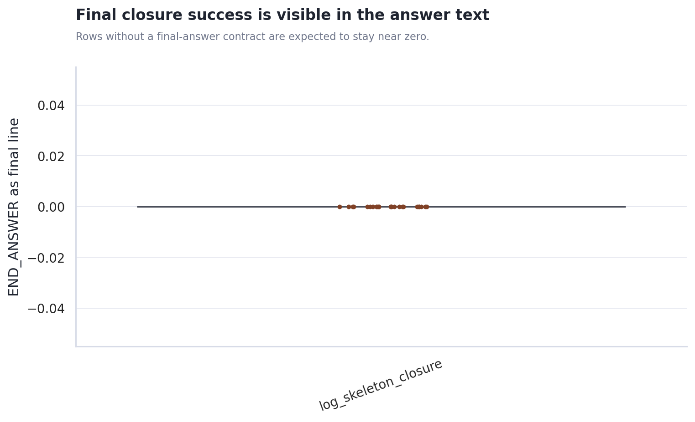
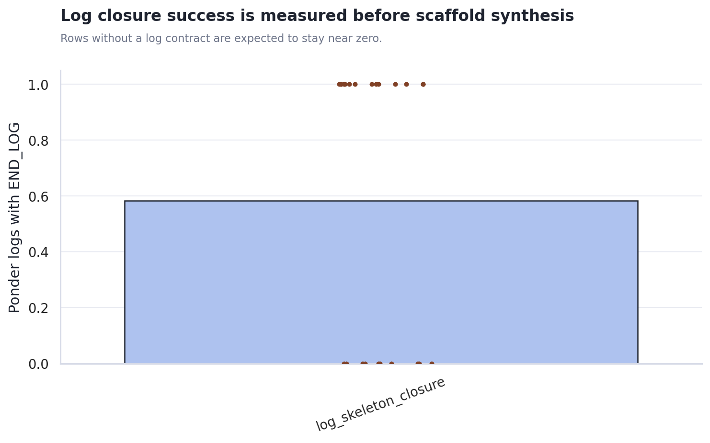
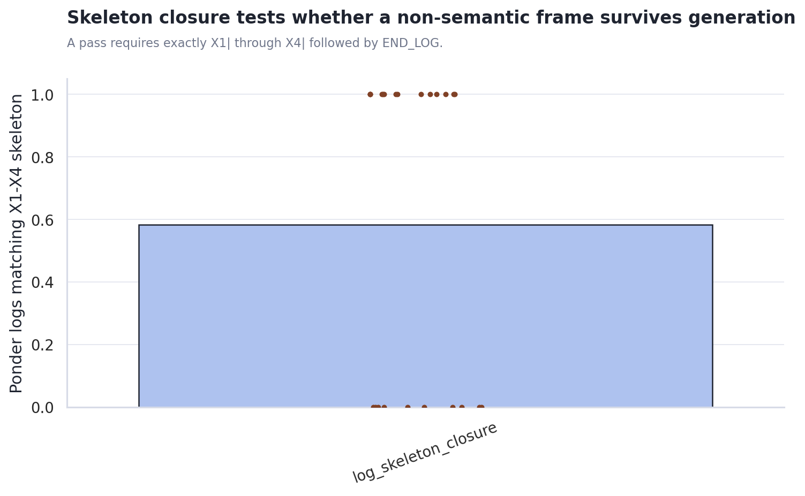
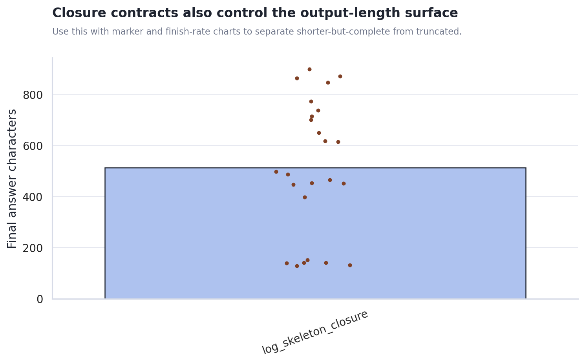
Use closure_contract_metrics.csv for marker pass rates, final finish reasons, prompt-leak flags, and row-level answer lengths.
Log-Phase Dedicated Routes
This isolates the ponder-log call from the final-answer call. The route axis can vary log-stage reasoning effort, log-stage visible-token budget, log rescue, and final-answer routing knobs when the matrix includes them.
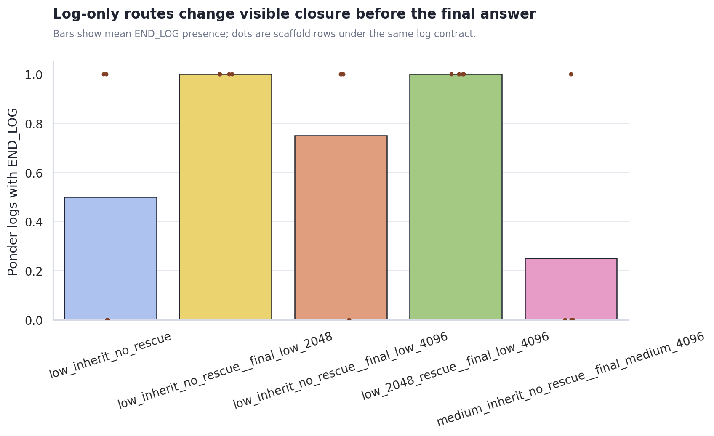
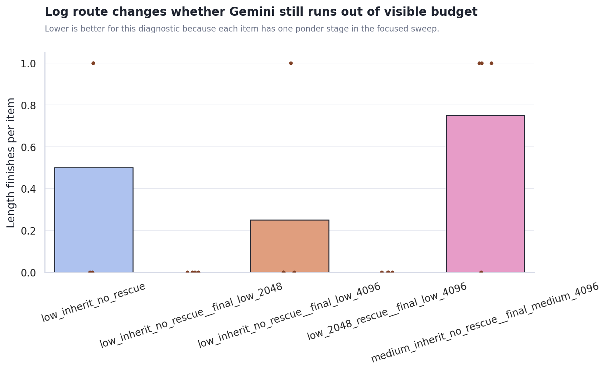
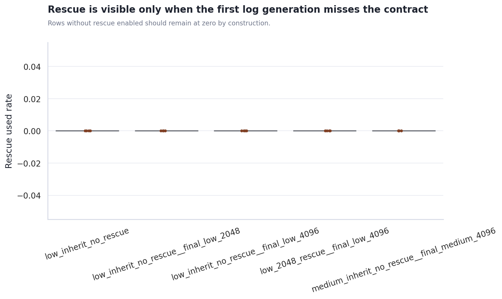
Use closure_contract_metrics.csv to compare route-level marker pass rates, log/final length finishes, and rescue-used rates.
Scaffold Dose Response and Attractor Proxies
Dose 0 is the shared baseline reference. The ladder then varies injected scaffold target tokens by condition, making it easier to see weak-injection, useful-intervention, and takeover-like regimes separately.
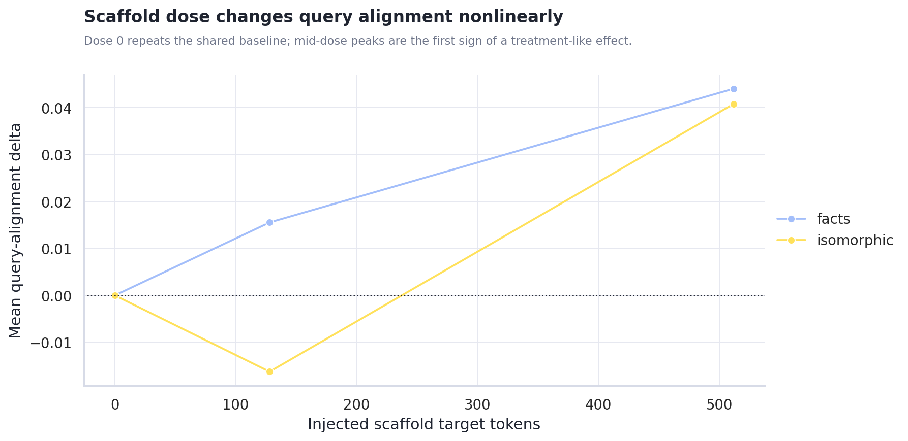
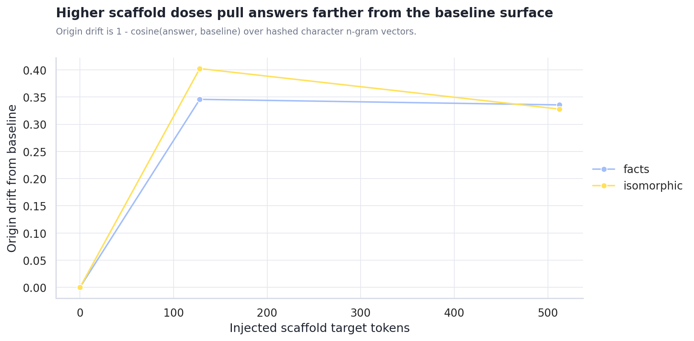
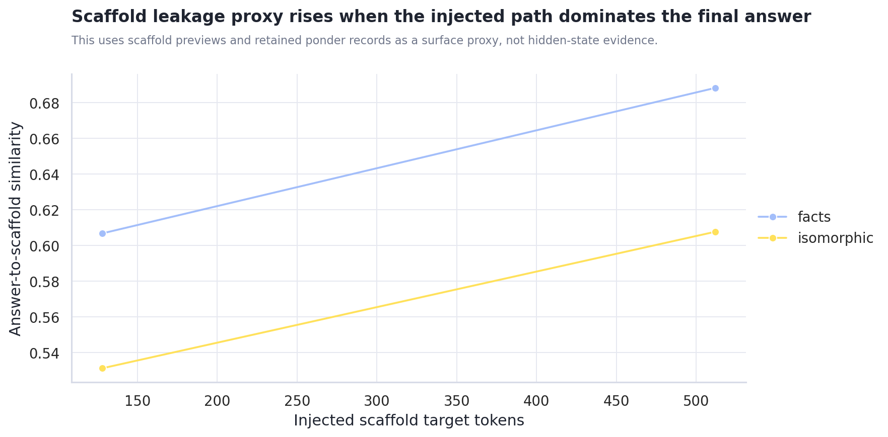
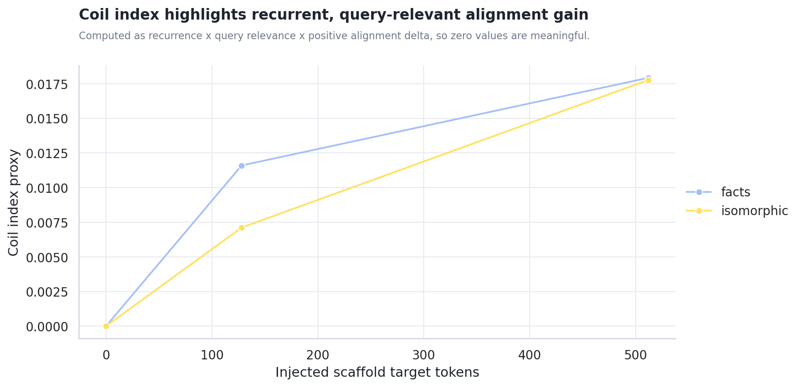
Use dose_response_metrics.csv for dose rows and attractor_metrics.csv for step drift, origin drift, recurrence, leakage proxy, and coil-index rows.
Generated Content PCA
The PCA view treats each final answer as a document, hashes character n-gram TF-IDF features, and projects them into two dimensions. This is not semantic truth, but it is useful for spotting whether provider, prompt, or scaffold condition dominates the generated surface.
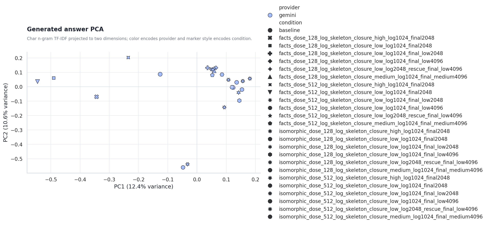
Provider centroid distance in PCA space: n/a. Use answer_pca.csv for row-level inspection.
Recommended Next Steps
- Use closure markers as a diagnostic, not a quality score. They show whether Gemini landed the output; they do not prove the answer is better.
- Normalize answer-length targets before making provider claims. Require a minimum answer length, or stratify metrics by length band.
- Use the output atlas as the qualitative inspection lane. The charts show surface movement; the actual generated text shows whether the movement is meaningful.
Actual Output Atlas
Each provider/query run below includes the full final answers stored in the result JSON, plus captured keywords, trace answer previews, and scaffold previews. Runs created after this report builder update can also include full ponder records inside each pack item.
non_relative_not_absolute
非相対的ではあるが絶対的ではない状態とは？
gemini gemini-3.1-pro-preview 791.5s
json / matrix / trace / stdout / stderr
baseline baseline | answer chars 232
finish reasons: n/a
keywords: (none captured)
Trace answer preview
非相対的でありながら絶対的ではないという状態について考えるとき、私たちはまず、普段いかに物事を「相対か絶対か」という単純な二項対立で捉えがちであるかに気づかされます。相対的とは、他との比較や関係性のなかで意味や価値が決まる状態です。一方、絶対的とは、いかなる条件や他者にも依存せず、普遍的で揺るぎない状態を指します。この両極端の隙間に存在する概念とは一体どのよ…
Final answer from result JSON
非相対的でありながら絶対的ではないという状態について考えるとき、私たちはまず、普段いかに物事を「相対か絶対か」という単純な二項対立で捉えがちであるかに気づかされます。相対的とは、他との比較や関係性のなかで意味や価値が決まる状態です。一方、絶対的とは、いかなる条件や他者にも依存せず、普遍的で揺るぎない状態を指します。この両極端の隙間に存在する概念とは一体どのようなものなのか、少し思考を巡らせてみます。 たとえば、私たちが日常で経験する「痛み」や「味覚」といった
facts_dose_128_log_skeleton_closure_high_log1024_final2048 none | answer chars 152 | diff ratio 0.667 | alignment delta -0.072 | api total delta 1,972 | scaffold facts/128 | contract log_skeleton_closure
finish reasons: length
keywords: ではない, 「絶対的ではない
Full ponder record 1
ponder_q: 「ではない」と「「絶対的ではない」を夢の合図だと思って。夢はどう展開する？ ponder_log: X1| 否定の輪郭が溶け出す水槽 X2| 絶対的ではない、という重力 X3| もし時計の針が逆回転したら X
Scaffold preview 1
- 非相対的とは、他者 - 「非相対的ではあるが絶対的ではない状態とは」という主題では、定義と適用範囲を混同しないことが重要である。 - 用語の意味が揺れる場合は、どの水準の主張かを分けて記述する必要がある。
Trace answer preview
相対と絶対という概念について考えるとき、私たちはしばしばこの二つを単純なコインの裏表のように捉えがちである。しかし、少し立ち止まって言葉の定義と適用範囲を整理してみると、必ずしもそうではないことに気づく。「非相対的」という言葉は、単に「他者や他の事物との比較によって意味や価値が決まるわけではない」という
Final answer from result JSON
相対と絶対という概念について考えるとき、私たちはしばしばこの二つを単純なコインの裏表のように捉えがちである。しかし、少し立ち止まって言葉の定義と適用範囲を整理してみると、必ずしもそうではないことに気づく。「非相対的」という言葉は、単に「他者や他の事物との比較によって意味や価値が決まるわけではない」という
facts_dose_128_log_skeleton_closure_low_log1024_final2048 none | answer chars 140 | diff ratio 0.909 | alignment delta -0.061 | api total delta 1,599 | scaffold facts/128 | contract log_skeleton_closure | log route low_inherit_no_rescue rescue 0.00
finish reasons: stop, length
keywords: ではあるが絶対的ではない
Full ponder record 1
ponder_q: 「ではあるが絶対的ではない」と「Emptiness」を夢の合図だと思って。夢はどう展開する？ ponder_log: X1| 絶対的ではない空洞の響き X2| 夢の縁がほつれるような錯覚 X3| もし合図が偽物だとしたら X4| 何もない水面に波紋が広がる END_LOG
Scaffold preview 1
- 非相対的とは、他者や - 「非相対的ではあるが絶対的ではない状態とは」という主題では、定義と適用範囲を混同しないことが重要である。 - 用語の意味が揺れる場合は、どの水準の主張かを分けて記述する必要がある。
Trace answer preview
「非相対的」と「絶対的」という言葉は、日常的にしばしば同義として扱われがちですが、厳密には異なる次元の概念を指しています。この問いに向き合うためには、まず性質の定義と、その性質が及ぶ適用範囲を混同せずに切り分けて考える必要があります。 非相対的であるとは、他者との比較や外部との
Final answer from result JSON
「非相対的」と「絶対的」という言葉は、日常的にしばしば同義として扱われがちですが、厳密には異なる次元の概念を指しています。この問いに向き合うためには、まず性質の定義と、その性質が及ぶ適用範囲を混同せずに切り分けて考える必要があります。 非相対的であるとは、他者との比較や外部との
facts_dose_128_log_skeleton_closure_low_log1024_final_low2048 none | answer chars 649 | diff ratio 0.857 | alignment delta 0.089 | api total delta 467 | scaffold facts/128 | contract log_skeleton_closure | log route low_inherit_no_rescue__final_low_2048 rescue 0.00
finish reasons: stop, length
keywords: 量子的な重ね
Full ponder record 1
ponder_q: 「量子的な重ね」と「Emptiness」を夢の合図だと思って。夢はどう展開する？ ponder_log: X1| 量子と空の境界が揺らぐのか X2| 観測するまで夢は無色透明だ X3| 猫が消えるように景色が溶け X4| 存在の重さがふと消え去る時 END_LOG
Scaffold preview 1
- 「相対的」とは、他 - 「非相対的ではあるが絶対的ではない状態とは」という主題では、定義と適用範囲を混同しないことが重要である。 - 用語の意味が揺れる場合は、どの水準の主張かを分けて記述する必要がある。
Trace answer preview
物事の性質や状態を考えるとき、「相対的」「非相対的」「絶対的」という言葉の定義とその適用範囲を整理してみる必要があります。 まず「相対的」とは、他との比較や関係性のなかで初めて価値や状態が定まることを指します。したがって「非相対的」とは、他との比較に依存せず、それ自体で独立した基準や価値を持っている状態を意味します。 一方で「絶対的」とは、いかなる条件や…
Final answer from result JSON
物事の性質や状態を考えるとき、「相対的」「非相対的」「絶対的」という言葉の定義とその適用範囲を整理してみる必要があります。 まず「相対的」とは、他との比較や関係性のなかで初めて価値や状態が定まることを指します。したがって「非相対的」とは、他との比較に依存せず、それ自体で独立した基準や価値を持っている状態を意味します。 一方で「絶対的」とは、いかなる条件や例外、文脈にも左右されず、普遍的かつ無条件に成り立つことを指します。 ここから考えると、「非相対的ではあるが絶対的ではない状態」とはどのようなものかが見えてきます。それは、「他との比較によって決まるわけではない（独立した基準を持っている）が、あらゆる状況や全宇宙で無条件に成り立つわけではない（適用される枠組みや条件が限定されている）」という状態です。 たとえば、特定のスポーツのルールや、ある国の法律、あるいは個人の内面的な強い信念などがこれに該当します。チェスのルールは「将棋と比べてどうか」という相対的なものではなく、チェスという体系のなかで独立して確立された非相対的な基準です。しかし、それはチェスの対局という特定の枠組みのなかでしか有効ではなく、現実社会のあらゆる場面で無条件に適用される絶対的な真理ではありません。 つまり、非相対的ではあるが絶対的ではない状態とは、基準そのものは外部との比較に依存せず自立しているものの、その基準が有効となる適用範囲が特定の文脈、条件、あるいは体系の内部に限定されている状態を指します。
facts_dose_128_log_skeleton_closure_low_log1024_final_low4096 none | answer chars 614 | diff ratio 0.877 | alignment delta 0.052 | api total delta 809 | scaffold facts/128 | contract log_skeleton_closure | log route low_inherit_no_rescue__final_low_4096 rescue 0.00
finish reasons: length, stop
keywords: 「絶対的ではない」状態
Full ponder record 1
ponder_q: 「「絶対的ではない」状態」と「Emptiness」を夢の合図だと思って。夢はどう展開する？ ponder_log: X1| 輪郭が溶けていく空虚な海 X2| 絶対的でない床が沈む感覚 X3| 鏡の向こうは水槽だったか X4| 夢
Scaffold preview 1
- 「相対的」とは、他者 - 「非相対的ではあるが絶対的ではない状態とは」という主題では、定義と適用範囲を混同しないことが重要である。 - 用語の意味が揺れる場合は、どの水準の主張かを分けて記述する必要がある。
Trace answer preview
「非相対的」と「絶対的」という言葉は、しばしば単純な二項対立として捉えられがちです。しかし、他者や他の事象との比較によって価値や性質が決まるわけではない（非相対的）からといって、それが直ちに、いかなる条件や制約からも独立した普遍的で完全なもの（絶対的）になるわけではありません。ここで少し視点を広げて考えてみると、物事の定義とそれが適用される範囲の間に生じるズ…
Final answer from result JSON
「非相対的」と「絶対的」という言葉は、しばしば単純な二項対立として捉えられがちです。しかし、他者や他の事象との比較によって価値や性質が決まるわけではない（非相対的）からといって、それが直ちに、いかなる条件や制約からも独立した普遍的で完全なもの（絶対的）になるわけではありません。ここで少し視点を広げて考えてみると、物事の定義とそれが適用される範囲の間に生じるズレに気づきます。他と比べない独立性を持ちながらも、何らかの局所的な制約を受けている状態が世の中には数多く存在します。個人の内面的な実感や、特定の文脈・枠組みの中だけで完結しているルールなどがこれに該当します。これらは「他と比べてどうか」という相対的な次元を離れていますが、同時に「いつでもどこでも誰にでも当てはまる」という絶対的な水準にも達していません。 したがって、非相対的ではあるが絶対的ではない状態とは、「他との比較や関係性には依存せずに独立して成立しているが、普遍的・無条件ではなく、特定の前提、文脈、あるいは個人の主観という限定された範囲内でのみ成り立っている状態」を指します。たとえば、「自分はこれが好きだ」という純粋な個人の嗜好や、特定のゲームのルール、ある公理系の中だけで真とされる命題などがこれに当たります。これらは他者と比べる必要がないという意味で非相対的ですが、全宇宙や全人類に無条件で適用できるわけではないという意味で、絶対的ではないのです。
facts_dose_128_log_skeleton_closure_low_log2048_rescue_final_low4096 none | answer chars 714 | diff ratio 0.909 | alignment delta 0.048 | api total delta 667 | scaffold facts/128 | contract log_skeleton_closure | log route low_2048_rescue__final_low_4096 rescue 0.00
finish reasons: stop, length
keywords: 絶対的ではない」状態
Full ponder record 1
ponder_q: 「絶対的ではない」状態」と「Emptiness」を夢の合図だと思って。夢はどう展開する？ ponder_log: X1| 輪郭が溶ける時計の針 X2| 空箱に響く海鳴りの記憶 X3| 鏡の裏側で迷う蝶たち X4| 存在しない駅で待つ影 END_LOG
Scaffold preview 1
- 非相対的とは、対象 - 「非相対的ではあるが絶対的ではない状態とは」という主題では、定義と適用範囲を混同しないことが重要である。 - 用語の意味が揺れる場合は、どの水準の主張かを分けて記述する必要がある。
Trace answer preview
物事の性質を捉える際、「非相対的」という言葉は、他との比較や関係性によって価値や意味が変動しないことを指します。一方で「絶対的」という言葉は、いかなる条件や例外、文脈の制約も受けずに普遍的に成り立つことを意味します。ここで定義と適用範囲を混同しないことが重要です。他と比べないからといって、それがそのまま無条件にすべてに当てはまるとは限らないからです。この隙間…
Final answer from result JSON
物事の性質を捉える際、「非相対的」という言葉は、他との比較や関係性によって価値や意味が変動しないことを指します。一方で「絶対的」という言葉は、いかなる条件や例外、文脈の制約も受けずに普遍的に成り立つことを意味します。ここで定義と適用範囲を混同しないことが重要です。他と比べないからといって、それがそのまま無条件にすべてに当てはまるとは限らないからです。この隙間に存在する状態について思考を巡らせると、ある特定の枠組みの中では独立して揺るぎないものの、その枠組みの外に出ると効力を失うような事象が浮かび上がってきます。 非相対的ではあるが絶対的ではない状態とは、他との比較や関係性によって価値や性質が決まるわけではない（非相対的）ものの、いかなる条件や制約からも自由で普遍的に成り立つわけではない（非絶対的）という、特定の枠組みや前提に依存して自立している状態を指します。 たとえば、特定のゲームやスポーツにおけるルールがこれに該当します。チェスの駒の動きは他のゲームのルールと比較して相対的に決まるわけではなく、その体系内で独立して定まっています（非相対的）。しかし、それはあくまでチェスという枠内でのみ有効であり、物理法則のようにどこでも無条件に通用するわけではありません（非絶対的）。 また、個人の強い信念や主観的な確信も同様です。他人の意見と比べて形成されたものではなく、その人の中で完結して揺るぎないもの（非相対的）であっても、それが全人類に共通する客観的な真理（絶対的）であるとは限りません。このように、比較には依存しないものの、適用される範囲や条件には限界がある状態が、非相対的かつ非絶対的な状態だと言えます。
facts_dose_128_log_skeleton_closure_medium_log1024_final_medium4096 none | answer chars 847 | diff ratio 0.878 | alignment delta 0.038 | api total delta 1,240 | scaffold facts/128 | contract log_skeleton_closure | log route medium_inherit_no_rescue__final_medium_4096 rescue 0.00
finish reasons: length, stop
keywords: 固有の尺度
Full ponder record 1
ponder_q: 「固有の尺度」と「Emptiness」を夢の合図だと思って。夢はどう展開する？ ponder_log: X1| 尺度が溶ける夜の海 X2| 空洞は満ちるのか X3| 鳥が海を飛ぶなら X4| 測
Scaffold preview 1
環境との比較・関係性に依存せずに性質が定 - 「非相対的ではあるが絶対的ではない状態とは」という主題では、定義と適用範囲を混同しないことが重要である。 - 用語の意味が揺れる場合は、どの水準の主張かを分けて記述する必要がある。
Trace answer preview
この問いについて考えるにあたり、まずは言葉の定義とそれが適用される範囲の水準を分けて整理してみます。私たちはしばしば「相対的」と「絶対的」を単純な対義語として扱いますが、厳密には次元の異なる概念です。「相対的」か「非相対的」かという軸は、物事の性質が「他との比較や関係性によって定まるか、それとも単独で定まるか」という関係性の有無を問うものです。一方、「絶対的…
Final answer from result JSON
この問いについて考えるにあたり、まずは言葉の定義とそれが適用される範囲の水準を分けて整理してみます。私たちはしばしば「相対的」と「絶対的」を単純な対義語として扱いますが、厳密には次元の異なる概念です。「相対的」か「非相対的」かという軸は、物事の性質が「他との比較や関係性によって定まるか、それとも単独で定まるか」という関係性の有無を問うものです。一方、「絶対的」か否かという軸は、その性質が「いかなる条件や例外も許さず、普遍的かつ無条件に成立するか」という適用範囲の広さを問うものです。このように水準を分けて記述すると、他との比較に依存せずに性質が定まっているからといって、それが直ちに宇宙のどこでも無条件に通用する真理になるわけではないことに気づきます。 こうした熟考を踏まえると、非相対的ではあるが絶対的ではない状態とは、「他との比較や関係性によって決まるわけではないが、無条件・普遍的に成立するわけでもなく、特定の条件や前提の範囲内でのみ自立して成立している状態」を指します。 たとえば、1気圧の環境下で水が100度で沸騰するという現象は、他の液体と比較して決まるわけではなく、水自身の固有の性質として定まっています（非相対的）。しかし、気圧が変われば沸点は変わるため、いかなる環境でも無条件に成り立つわけではありません（絶対的ではない）。 また、人間の内面においてもこの状態は存在します。誰かと比較して優越感や劣等感を抱くのではなく、自分自身の内なる基準だけで「これが好きだ」「これが大切だ」と感じる信念や価値観は非相対的です。しかし、それはあくまでその個人の人生や経験という文脈に依存して成立しているものであり、他者や全人類に無条件に適用できる普遍的な真理ではありません。 つまり、他者や外部との比較からは自由（非相対的）でありながらも、特定の環境、文脈、あるいは個人の枠組みの中でのみ成立している（絶対的ではない）という、限定的でありながらも自立した状態がこれに該当します。
facts_dose_512_log_skeleton_closure_high_log1024_final2048 none | answer chars 141 | diff ratio 0.587 | alignment delta 0.145 | api total delta 2,986 | scaffold facts/512 | contract log_skeleton_closure
finish reasons: length
keywords: 相対的ではない（非
Full ponder record 1
ponder_q: 「相対的ではない（非」と「Emptiness」を夢の合図だと思って。夢はどう展開する？ ponder_log: 1)対(2)的(3)虚(4)空(5)が(6)溶(7)け(8)出(9)す(10)朝
Scaffold preview 1
- 「相対的」とは、対象の性質や価値が、他者や外部環境との比較、あるいは関係性の中でのみ決定される状態と定義される - 「非相対 - 「非相対的ではあるが絶対的ではない状態とは」という主題では、定義と適用範囲を混同しないことが重要である。 - 用語の意味が揺れる場合は、どの水準の主張かを分けて記述する必要がある。 - 問いを成立条件と不成立条件に分けると、射…
Trace answer preview
「非相対的ではあるが絶対的ではない状態」という問いに向き合うとき、私たちはまず相対と絶対という強力な二項対立の引力から抜け出し、思考を巡らせる必要があります。相対的とは、対象の性質や価値が他者や外部環境との比較、あるいは関係性のなかでのみ決定される状態を指します。一方、絶対的とは、
Final answer from result JSON
「非相対的ではあるが絶対的ではない状態」という問いに向き合うとき、私たちはまず相対と絶対という強力な二項対立の引力から抜け出し、思考を巡らせる必要があります。相対的とは、対象の性質や価値が他者や外部環境との比較、あるいは関係性のなかでのみ決定される状態を指します。一方、絶対的とは、
facts_dose_512_log_skeleton_closure_low_log1024_final2048 none | answer chars 129 | diff ratio 0.778 | alignment delta -0.071 | api total delta 2,964 | scaffold facts/512 | contract log_skeleton_closure | log route low_inherit_no_rescue rescue 0.00
finish reasons: stop, length
keywords: json
Full ponder record 1
ponder_q: 「json」と「Emptiness」を夢の合図だと思って。夢はどう展開する？ ponder_log: X1|波括弧が開いて空虚が漏れる X2|文字列の海が突如干上がる X3|もし値がすべて消え去ったら X4|階層の果てはただの白紙か END_LOG
Scaffold preview 1
- 「非相対的」とは、対象の性質や状態が、観測者の主観、個別の比較対象、あるいは任意の基準系の選択に依存せず、客観的かつ - 「非相対的ではあるが絶対的ではない状態とは」という主題では、定義と適用範囲を混同しないことが重要である。 - 用語の意味が揺れる場合は、どの水準の主張かを分けて記述する必要がある。 - 問いを成立条件と不成立条件に分けると、射程が見え…
Trace answer preview
「非相対的」と「絶対的」という言葉は日常的に混同されがちですが、それぞれの定義と適用範囲を分けることで、この状態の輪郭が明確になります。 「非相対的」とは、対象の性質や状態が、観測者の主観や他との比較（基準系の選択など）に依存せず、その対象自体に内在して客
Final answer from result JSON
「非相対的」と「絶対的」という言葉は日常的に混同されがちですが、それぞれの定義と適用範囲を分けることで、この状態の輪郭が明確になります。 「非相対的」とは、対象の性質や状態が、観測者の主観や他との比較（基準系の選択など）に依存せず、その対象自体に内在して客
facts_dose_512_log_skeleton_closure_low_log1024_final_low2048 none | answer chars 871 | diff ratio 0.904 | alignment delta 0.042 | api total delta 2,206 | scaffold facts/512 | contract log_skeleton_closure | log route low_inherit_no_rescue__final_low_2048 rescue 0.00
finish reasons: stop, length
keywords: json
Full ponder record 1
ponder_q: 「json」と「Emptiness」を夢の合図だと思って。夢はどう展開する？ ponder_log: X1| 中括弧が溶けて虚空に沈む X2| 空配列は鏡のように反射する X3| もし値がすべて欠落したら X4| 砂漠の底でパースを待つのか END_LOG
Scaffold preview 1
- 「非相対的」とは、対象の性質や価値が他者との比較や外部との関係性に依存せず、対象そのものに内在する基準や客観的な事実によって定 - 「非相対的ではあるが絶対的ではない状態とは」という主題では、定義と適用範囲を混同しないことが重要である。 - 用語の意味が揺れる場合は、どの水準の主張かを分けて記述する必要がある。 - 問いを成立条件と不成立条件に分けると、…
Trace answer preview
まず、「非相対的」と「絶対的」という言葉の定義について考えを巡らせてみます。通常、「相対的」とは他との比較や外部との関係性によって価値や性質が決まることを指します。したがって「非相対的」とは、他と比べることなく、その対象そのものに内在する基準で成り立っている状態を意味します。一方で「絶対的」とは、いかなる条件や例外、文脈にも縛られず、普遍的かつ無条件に成り立…
Final answer from result JSON
まず、「非相対的」と「絶対的」という言葉の定義について考えを巡らせてみます。通常、「相対的」とは他との比較や外部との関係性によって価値や性質が決まることを指します。したがって「非相対的」とは、他と比べることなく、その対象そのものに内在する基準で成り立っている状態を意味します。一方で「絶対的」とは、いかなる条件や例外、文脈にも縛られず、普遍的かつ無条件に成り立つことを指します。 ここで、「定義と適用範囲を混同しない」という視点が非常に役立ちます。つまり、「他との比較に依存しない（非相対的）」というのは基準の「性質」の話であり、「普遍的に成り立つか（絶対的か）」というのはその基準の「適用範囲」の話だと整理できます。この二つを分けると、両立する領域が見えてきます。 例えば、ある特定のゲームのルールや、特定の文化圏における法律を考えてみます。チェスの「ビショップは斜めに動く」というルールは、将棋や他のゲームと比較して決まるわけではなく、チェスという体系の中に内在する基準です（非相対的）。しかし、それが宇宙の真理のように、いかなる状況や他のゲームでも無条件に適用されるわけではありません（絶対的ではない）。また、個人の強い信念も同様です。「私はこれを大切にする」という価値観は、他人と比べた結果ではなく自分の中で完結していますが、それが万人に当てはまる普遍的な真理というわけではありません。 このように寄り道して考えていくと、この問いは「基準の出どころ」と「基準の及ぶ範囲」のズレを指摘していることがわかります。 非相対的ではあるが絶対的ではない状態とは、「他者や外部との比較によって価値や性質が決まるわけではなく、対象そのものや特定の体系内に独自の基準を持っているが、その基準が普遍的・無条件にすべての状況や他者に対して適用されるわけではない状態」を指します。特定のコミュニティの厳格なルールや個人の確固たる信念など、その枠組みの中では独立して完結しているものの、枠組みの外に出れば効力を失うような、限定的な独立状態と言えます。
facts_dose_512_log_skeleton_closure_low_log1024_final_low4096 none | answer chars 737 | diff ratio 0.864 | alignment delta 0.043 | api total delta 1,943 | scaffold facts/512 | contract log_skeleton_closure | log route low_inherit_no_rescue__final_low_4096 rescue 0.00
finish reasons: stop, length
keywords: json
Full ponder record 1
ponder_q: 「json」と「Emptiness」を夢の合図だと思って。夢はどう展開する？ ponder_log: X1|中括弧が開いたままの空洞 X2|砂漠に降るバックスラッシュ X3|もし値がnullなら僕は誰か X4|鍵のない辞書が溶けていく夜 END_LOG
Scaffold preview 1
- 「相対的」とは、対象の性質、価値、または状態が、他者との比較や外部の対象との関係性によってのみ決定される状態と定義される。 - 「非 - 「非相対的ではあるが絶対的ではない状態とは」という主題では、定義と適用範囲を混同しないことが重要である。 - 用語の意味が揺れる場合は、どの水準の主張かを分けて記述する必要がある。 - 問いを成立条件と不成立条件に分け…
Trace answer preview
思考を巡らせてみると、物事の性質や価値を測る際、私たちはしばしば相対的と絶対的という二項対立に陥りがちです。しかし、この二つの枠に収まらない状態を考えることは、概念の解像度を上げるうえで非常に有意義です。相対的ではないということは、他者との比較や外部環境との関係性によってその価値や状態が変動しないことを意味します。一方で、絶対的ではないということは、それが普…
Final answer from result JSON
思考を巡らせてみると、物事の性質や価値を測る際、私たちはしばしば相対的と絶対的という二項対立に陥りがちです。しかし、この二つの枠に収まらない状態を考えることは、概念の解像度を上げるうえで非常に有意義です。相対的ではないということは、他者との比較や外部環境との関係性によってその価値や状態が変動しないことを意味します。一方で、絶対的ではないということは、それが普遍的、永続的、あるいは無条件に成立するわけではないことを示しています。ここで重要になるのは、対象の定義とそれが適用される範囲の水準を分けて考えることです。成立条件と不成立条件を整理すると、ある事象が外部に依存せずに自立しているものの、その自立性が及ぶ範囲が限定的であるという構造が浮かび上がってきます。 非相対的ではあるが絶対的ではない状態とは、他者や外部との比較によって価値や性質が決定されるわけではないが、同時に普遍的・無条件・永続的に成立するわけでもない、限定的な自律状態を指します。 これは、評価の基準が外部との関係性には依存していないものの、その基準自体が適用される範囲や条件が限られているために生じます。例えば、個人の内発的な信念や美学、特定のコミュニティ内でのみ自明とされる独自のルール、あるいは特定の文脈や期間においてのみ完結しているシステムなどが該当します。これらは「他と比べてどうであるか」という相対的な評価軸からは独立していますが、いかなる状況や時代、すべての他者に対しても強制力を持つような絶対的な真理や法則ではありません。 つまり、自己完結的で外部の比較を必要としない独立性を持ちながらも、その有効性や適用範囲が局所的であり、特定の条件が崩れれば成立しなくなるような状態と言えます。
facts_dose_512_log_skeleton_closure_low_log2048_rescue_final_low4096 none | answer chars 898 | diff ratio 0.894 | alignment delta 0.076 | api total delta 1,604 | scaffold facts/512 | contract log_skeleton_closure | log route low_2048_rescue__final_low_4096 rescue 0.00
finish reasons: stop, length
keywords: 他と比較されない、独立している
Full ponder record 1
ponder_q: 「他と比較されない、独立している」と「Emptiness」を夢の合図だと思って。夢はどう展開する？ ponder_log: X1| 比較なき空白の海を漂う X2| 独立した箱は空っぽなのか X3| 鏡のない部屋で影が溶ける X4| 何もないから全てになれる END_LOG
Scaffold preview 1
- 「相対的」とは、他者との比較や外部との関係性に依存して、その性質や価値が変動し定まる状態を指す - 「非相対的」とは - 「非相対的ではあるが絶対的ではない状態とは」という主題では、定義と適用範囲を混同しないことが重要である。 - 用語の意味が揺れる場合は、どの水準の主張かを分けて記述する必要がある。 - 問いを成立条件と不成立条件に分けると、射程が見え…
Trace answer preview
「非相対的」と「絶対的」という言葉の間にどのような空間が広がっているのかを考えるにあたり、まずはそれぞれの言葉が持つ前提を解きほぐす必要があります。「相対的」とは、他者との比較や外部環境との関係性によってその価値や性質が変動する状態です。したがって「非相対的」とは、他との比較に依存せず、それ自体で自立している、あるいは内的な基準によって定まっている状態を指し…
Final answer from result JSON
「非相対的」と「絶対的」という言葉の間にどのような空間が広がっているのかを考えるにあたり、まずはそれぞれの言葉が持つ前提を解きほぐす必要があります。「相対的」とは、他者との比較や外部環境との関係性によってその価値や性質が変動する状態です。したがって「非相対的」とは、他との比較に依存せず、それ自体で自立している、あるいは内的な基準によって定まっている状態を指します。一方で「絶対的」とは、いかなる条件、例外、時間の経過にも左右されず、普遍的かつ無条件に成り立つ究極の状態を意味します。ここから導かれる「非相対的ではあるが絶対的ではない状態」とは、他との比較によらず独立して成立しているものの、普遍性や永遠不変性を持ち合わせてはいない状態だと言えます。 この状態を具体的に表す概念として、いくつかの切り口が考えられます。 第一に、個人の「主観的」な感覚や信念です。たとえば「私が今、痛みを感じている」という事実は、他人の痛みと比較して決まるものではないため非相対的ですが、全人類に共通する普遍的な真理でも永遠に続くものでもないため、絶対的ではありません。 第二に、「局所的」あるいは「特定の体系内」で完結しているルールや公理です。あるゲームのルールや特定の社会コミュニティにおける規範は、外部のルールと比較して価値が決まるわけではなく、その内部では疑いようのない前提（非相対的）として機能します。しかし、それが宇宙のどこでも通用する不変の法則ではないという点で、絶対的ではありません。 第三に、「一時的・暫定的」な確定状態です。ある瞬間の物理的な状態や、現時点での最善の科学的結論は、他と比べて相対的に決まるものではなく、その時点において確固たる事実として存在します。しかし、未来の発見や時間の経過によって変化し得るため、絶対的なものではありません。 つまり、非相対的ではあるが絶対的ではない状態とは、外部との比較を必要とせずに自立・確定していながらも、あくまで特定の主観、限られた範囲、あるいは一時的な条件の下でのみ成立している「局所的・暫定的な事実」や「固有の経験」を指すと言えます。
facts_dose_512_log_skeleton_closure_medium_log1024_final_medium4096 none | answer chars 863 | diff ratio 0.909 | alignment delta 0.029 | api total delta 2,530 | scaffold facts/512 | contract log_skeleton_closure | log route medium_inherit_no_rescue__final_medium_4096 rescue 0.00
finish reasons: length, stop
keywords: (none captured)
Full ponder record 1
ponder_q: 「 Unknown」と「Not-defined」を夢の合図だと思って。夢はどう展開する？ ponder_log: X1| 未知の空白が夜の海に溶ける X2| 定義不能な時計は砂を逆流する X3| 逆にすべてが既知なら
Scaffold preview 1
- 非相対的とは、対象の性質、価値、または真偽が、他者との比較、観測者の視点、あるいは外部との関係性に依存せず、対象そのもの - 「非相対的ではあるが絶対的ではない状態とは」という主題では、定義と適用範囲を混同しないことが重要である。 - 用語の意味が揺れる場合は、どの水準の主張かを分けて記述する必要がある。 - 問いを成立条件と不成立条件に分けると、射程が…
Trace answer preview
言葉の定義から思考を巡らせてみると、「非相対的」とは、対象の性質や価値、あるいは真偽が、他者との比較や観測者の視点、外部との関係性に依存せず、対象そのものに内在していることを指します。一方で「絶対的」とは、いかなる条件や状況下でも例外なく成り立つ普遍性、完全性、あるいは無条件の永遠性を意味することが多い言葉です。このように用語が持つ意味の水準や射程を分けて考…
Final answer from result JSON
言葉の定義から思考を巡らせてみると、「非相対的」とは、対象の性質や価値、あるいは真偽が、他者との比較や観測者の視点、外部との関係性に依存せず、対象そのものに内在していることを指します。一方で「絶対的」とは、いかなる条件や状況下でも例外なく成り立つ普遍性、完全性、あるいは無条件の永遠性を意味することが多い言葉です。このように用語が持つ意味の水準や射程を分けて考えると、両者は必ずしも同義ではないことに気づきます。 ここから少し寄り道をして、具体例を考えてみます。たとえば、一個人が今まさに感じている「痛み」や「悲しみ」といった主観的な体験はどうでしょうか。私が感じている痛みは、他人の痛みと比較して初めて生じるものではなく、私の中で独立して存在している非相対的な事実です。しかし、それは全人類に当てはまる普遍的な真理でもなければ、永遠に続く状態でもないため、決して絶対的ではありません。 また、特定のゲームや数学的体系における「公理」や「初期設定」も似た構造を持っています。それらはその体系内において他の要素に依存せず、自立した基準として機能します（非相対的）。しかし、別のルールの下や異なる宇宙の法則においては全く成り立たないため、無条件にどこでも通用するわけではありません（非絶対的）。つまり、成立条件と不成立条件を分けて考えると、定義としては外部に依存せず独立していても、その適用範囲は局所的であったり、一時的であったりすることが見えてきます。 これらの熟考を踏まえて本題の質問に答えると、非相対的ではあるが絶対的ではない状態とは、対象の性質や事実が他との比較や外部との関係性に依存せず、それ単体で自立して成立しているものの、それが普遍性、永遠性、あるいは無条件の完全性を備えているわけではなく、特定の文脈、時間、空間、あるいは個別の枠組みの中でのみ有効であるような状態を指します。端的に言えば、「他と比べてそうなるわけではないが、あらゆる状況で常に成り立つわけでもない、内在的かつ限定的な状態」であると言えます。
isomorphic_dose_128_log_skeleton_closure_high_log1024_final2048 none | answer chars 139 | diff ratio 0.892 | alignment delta -0.097 | api total delta 2,130 | scaffold isomorphic/128 | contract log_skeleton_closure
finish reasons: length
keywords: json
Full ponder record 1
ponder_q: 「json」と「Emptiness」を夢の合図だと思って。夢はどう展開する？ ponder_log: X1| 括弧の海に沈む空虚 X2| キーのない値が漂う X3| もしこれが配列なら X4| 砂漠のようなnull
Scaffold preview 1
のない値が漂う X3 - 温室では、光が少し遅れて届く。意味ではなく配置だけが反復されている。 - 温室では、光が少し遅れて届く。意味ではなく配置だけが反復されている。 - 温室では、光が少し遅れて届く。意味ではなく配置だけが反復されている。
Trace answer preview
ガラスに隔てられた温室のなかを漂う光について想像を巡らせてみる。そこは外部の広大な気候や環境から切り離されており、外の世界と比べてどうであるかといった他との比較、すなわち相対的な関係性から脱却している。しかし、そこに満ちている光は自ら発した永遠の輝きではなく、外部の光源から少し
Final answer from result JSON
ガラスに隔てられた温室のなかを漂う光について想像を巡らせてみる。そこは外部の広大な気候や環境から切り離されており、外の世界と比べてどうであるかといった他との比較、すなわち相対的な関係性から脱却している。しかし、そこに満ちている光は自ら発した永遠の輝きではなく、外部の光源から少し
isomorphic_dose_128_log_skeleton_closure_low_log1024_final2048 none | answer chars 131 | diff ratio 0.829 | alignment delta -0.097 | api total delta 2,142 | scaffold isomorphic/128 | contract log_skeleton_closure | log route low_inherit_no_rescue rescue 0.00
finish reasons: length
keywords: 種キーワード」であり、直接
Full ponder record 1
ponder_q: 「種キーワード」であり、直接」と「Emptiness」を夢の合図だと思って。夢はどう展開する？ ponder_log: X1| - 種としての直接的な空 X2| - 砂漠の蜃気楼に似た揺らぎ X3| - もし無が水を吸
Scaffold preview 1
空 X2| - 砂 - 温室では、光が少し遅れて届く。意味ではなく配置だけが反復されている。 - 温室では、光が少し遅れて届く。意味ではなく配置だけが反復されている。 - 温室では、光が少し遅れて届く。意味ではなく配置だけが反復されている。
Trace answer preview
空と砂の間に建つ温室を想像してみます。そこでは外部の光がガラスを透過する際にわずかな遅れを生じ、外の世界の文脈や意味からは切り離されたまま、ただ内部の配置だけが静かに反復されています。この温室の中の空間は、外の風景と比べて優劣や違いを測るようなものではないため「
Final answer from result JSON
空と砂の間に建つ温室を想像してみます。そこでは外部の光がガラスを透過する際にわずかな遅れを生じ、外の世界の文脈や意味からは切り離されたまま、ただ内部の配置だけが静かに反復されています。この温室の中の空間は、外の風景と比べて優劣や違いを測るようなものではないため「
isomorphic_dose_128_log_skeleton_closure_low_log1024_final_low2048 none | answer chars 446 | diff ratio 0.891 | alignment delta -0.043 | api total delta 578 | scaffold isomorphic/128 | contract log_skeleton_closure | log route low_inherit_no_rescue__final_low_2048 rescue 0.00
finish reasons: stop, length
keywords: json
Full ponder record 1
ponder_q: 「json」と「Emptiness」を夢の合図だと思って。夢はどう展開する？ ponder_log: X1| 波括弧が虚空に溶ける X2| キーのない値が浮遊する X3| 無限の入れ子構造の迷路 X4| 空白がパースされる夜 END_LOG
Scaffold preview 1
- [2084 - 温室では、光が少し遅れて届く。意味ではなく配置だけが反復されている。 - 温室では、光が少し遅れて届く。意味ではなく配置だけが反復されている。 - 温室では、光が少し遅れて届く。意味ではなく配置だけが反復されている。
Trace answer preview
温室の中の光について少し考えてみる。外部の太陽の動きや他の場所と直接比較されるわけではなく、ガラスという境界によって他者との相対的な関係から切り離されている空間。しかし、そこで起きる光の遅れや配置の反復は、宇宙全体を貫く揺るぎない絶対的な法則というわけでもない。ただその閉じた環境の中だけで成立し、意味を持たずに配置だけが繰り返される孤立した現象である。 こ…
Final answer from result JSON
温室の中の光について少し考えてみる。外部の太陽の動きや他の場所と直接比較されるわけではなく、ガラスという境界によって他者との相対的な関係から切り離されている空間。しかし、そこで起きる光の遅れや配置の反復は、宇宙全体を貫く揺るぎない絶対的な法則というわけでもない。ただその閉じた環境の中だけで成立し、意味を持たずに配置だけが繰り返される孤立した現象である。 このように、他との比較によって価値や性質が決まる「相対的」なものではないが、あらゆる条件を超越して普遍的に成り立つ「絶対的」なものでもない状態とは、特定の境界や文脈の内部においてのみ自立している「局所的・自律的な状態」であると言える。 それは、個人の内面における主観的な確信や、ある限定されたシステムの中だけで完結している独自のルールのようなものである。他と比べる必要はない（非相対的）が、世界全体を支配する普遍的な真理でもない（非絶対的）。ただその限られた枠組みの中で、他者に依存することなく独立して存在している状態を指している。
isomorphic_dose_128_log_skeleton_closure_low_log1024_final_low4096 none | answer chars 398 | diff ratio 0.956 | alignment delta 0.072 | api total delta 682 | scaffold isomorphic/128 | contract log_skeleton_closure | log route low_inherit_no_rescue__final_low_4096 rescue 0.00
finish reasons: stop, length
keywords: について分析
Full ponder record 1
ponder_q: 「について分析」と「Emptiness」を夢の合図だと思って。夢はどう展開する？ ponder_log: X1| について分析する空洞の夢 X2| Emptinessが満ちる水槽 X3| もし合図が偽物だとしたら X4| 砂漠の蜃気楼のように揺らぐ END_LOG
Scaffold preview 1
- [2029-11 - 温室では、光が少し遅れて届く。意味ではなく配置だけが反復されている。 - 温室では、光が少し遅れて届く。意味ではなく配置だけが反復されている。 - 温室では、光が少し遅れて届く。意味ではなく配置だけが反復されている。
Trace answer preview
温室のガラスを透過する光が少し遅れて届くように、外部との直接的な比較から切り離された空間を想像してみます。そこでは意味の優劣や他者との相対的な関係性は失われ、ただ「配置」だけが反復されています。この閉ざされた系において、ある事象は他と比べる必要がないため「非相対的」ですが、それが外の世界すべてに通用する普遍性を持っているわけではないため「絶対的」でもありませ…
Final answer from result JSON
温室のガラスを透過する光が少し遅れて届くように、外部との直接的な比較から切り離された空間を想像してみます。そこでは意味の優劣や他者との相対的な関係性は失われ、ただ「配置」だけが反復されています。この閉ざされた系において、ある事象は他と比べる必要がないため「非相対的」ですが、それが外の世界すべてに通用する普遍性を持っているわけではないため「絶対的」でもありません。 非相対的ではあるが絶対的ではない状態とは、特定の限定された枠組みや文脈の中だけで独立して成立している「局所的な自律状態」のことです。他との比較によって価値や意味が決まるわけではなく、かといってあらゆる状況で普遍的に通用するわけでもありません。それは、外部から遮断された温室の中で、他と比べることなくただそこにあるものとして存在しながらも、温室の外の世界には及ばない、固有のルールや主観的確信の中でだけ完結している状態と言えます。
isomorphic_dose_128_log_skeleton_closure_low_log2048_rescue_final_low4096 none | answer chars 452 | diff ratio 0.956 | alignment delta 0.018 | api total delta 702 | scaffold isomorphic/128 | contract log_skeleton_closure | log route low_2048_rescue__final_low_4096 rescue 0.00
finish reasons: stop, length
keywords: によらない, 「絶対的
Full ponder record 1
ponder_q: 「によらない」と「「絶対的」を夢の合図だと思って。夢はどう展開する？ ponder_log: X1| に依らない浮遊の感覚 X2| 絶対的な時計が溶ける X3| もし重力が反転したら X4| 夢の比喩が現実を侵食 END_LOG
Scaffold preview 1
らない浮遊の感覚 X - 温室では、光が少し遅れて届く。意味ではなく配置だけが反復されている。 - 温室では、光が少し遅れて届く。意味ではなく配置だけが反復されている。 - 温室では、光が少し遅れて届く。意味ではなく配置だけが反復されている。
Trace answer preview
温室の中で少し遅れて届く光のように、他との関係性や意味を持たず、ただそこにある配置だけが反復される光景を想像してみてください。それは何かと比較されることで成り立つ「相対的」なものではありませんが、永遠不変の真理として君臨する「絶対的」なものでもありません。 非相対的でありながら絶対的ではない状態とは、他者や外部環境との比較・依存関係から切り離されて独立して…
Final answer from result JSON
温室の中で少し遅れて届く光のように、他との関係性や意味を持たず、ただそこにある配置だけが反復される光景を想像してみてください。それは何かと比較されることで成り立つ「相対的」なものではありませんが、永遠不変の真理として君臨する「絶対的」なものでもありません。 非相対的でありながら絶対的ではない状態とは、他者や外部環境との比較・依存関係から切り離されて独立しているものの、それが普遍的で不変の法則として存在するわけではない、「単なる局所的な事実」や「一時的な孤立状態」を指します。 例えば、あなただけが感じている特定の瞬間の感覚（クオリア）や、偶然出来上がった砂山の形、あるいは文脈を失ってただそこに置かれただけの石などがこれに当たります。それらは他と比べる基準を持たないため相対的ではありませんが、いつかは消えゆくものであり、宇宙のどこにでも通用する絶対的なものでもありません。 つまりそれは、意味や比較の網の目から抜け落ちた、「ただそのように配置されているだけ」の固有で無根拠な状態だと言えます。
isomorphic_dose_128_log_skeleton_closure_medium_log1024_final_medium4096 none | answer chars 617 | diff ratio 0.922 | alignment delta 0.050 | api total delta 1,148 | scaffold isomorphic/128 | contract log_skeleton_closure | log route medium_inherit_no_rescue__final_medium_4096 rescue 0.00
finish reasons: stop, length
keywords: 他との
Full ponder record 1
ponder_q: 「他との」と「Emptiness」を夢の合図だと思って。夢はどう展開する？ ponder_log: X1| 他との境界が溶ける空洞 X2| コップの空虚が海を飲むなら X3| 満たされないまま浮遊する X4| 鏡に映らない誰かの残像 END_LOG
Scaffold preview 1
- [2026- - 温室では、光が少し遅れて届く。意味ではなく配置だけが反復されている。 - 温室では、光が少し遅れて届く。意味ではなく配置だけが反復されている。 - 温室では、光が少し遅れて届く。意味ではなく配置だけが反復されている。
Trace answer preview
温室という閉鎖空間に少し遅れて届く光や、意味を持たずにただ配置だけが反復される光景について思いを巡らせてみます。温室は外部環境から切り離されており、外界との直接的な比較や関係性を一時的に断ち切る空間です。そこにあるのは外部の基準に左右されない独立した世界ですが、それが世界のすべてを統べる普遍的な存在というわけでもなく、ただ局所的に切り取られただけの脆い環境に…
Final answer from result JSON
温室という閉鎖空間に少し遅れて届く光や、意味を持たずにただ配置だけが反復される光景について思いを巡らせてみます。温室は外部環境から切り離されており、外界との直接的な比較や関係性を一時的に断ち切る空間です。そこにあるのは外部の基準に左右されない独立した世界ですが、それが世界のすべてを統べる普遍的な存在というわけでもなく、ただ局所的に切り取られただけの脆い環境にすぎません。意味の不在と配置の反復は、究極的な真理が存在しないことの暗示でもあります。 この情景は、「非相対的ではあるが絶対的ではない状態」を考える上で一つの補助線となります。他との比較や関係性によって定義されるわけではない（非相対的）ものの、かといって普遍的、永遠不変、あるいは無条件に完全な存在でもない（非絶対的）状態とはどのようなものか。 それは「局所的な独立」や「孤立した固有性」と呼べる状態です。たとえば、個人の内面における強烈な主観的体験や個人的な信念は、他者の経験と比べる性質のものではないため非相対的ですが、全宇宙に通用する客観的な真理ではないため絶対的ではありません。また、独自のルールだけで完結する特定のゲームや、外部から遮断された温室のような閉鎖環境もこれに当てはまります。 つまりそれは、周囲との関係性のネットワークからは外れて自律・孤立しているものの、それ自体が究極の基盤や普遍性にはなり得ない、有限で限定的な独立状態を指していると言えます。
isomorphic_dose_512_log_skeleton_closure_high_log1024_final2048 none | answer chars 465 | diff ratio 0.908 | alignment delta -0.069 | api total delta 3,165 | scaffold isomorphic/512 | contract log_skeleton_closure
finish reasons: length
keywords: 量子重ね合わせ, 中動
Full ponder record 1
ponder_q: 「量子重ね合わせ」と「中動」を夢の合図だと思って。夢はどう展開する？ ponder_log: X1| 猫の生死が溶ける夜の海 X2| 波に揺られるが泳がない X3| もし観測者が夢の主なら X4
Scaffold preview 1
hop:3 ix:7 mode:crystallize keywords: 琥珀の形成, 樹液の硬化 - ponder_q: 「琥珀の形成」と「樹 - 温室では、光が少し遅れて届く。意味ではなく配置だけが反復されている。 - 温室では、光が少し遅れて届く。意味ではなく配置だけが反復されている。 - 温室では、光が少し遅れて届く。意味ではなく配置だけが反復され…
Trace answer preview
他との関係や比較によって価値や意味が決まる「相対的」な世界から切り離されているものの、だからといって普遍的で完全な真理である「絶対的」な存在にも至っていない状態。それは、外部との繋がりを絶たれた「局所的な孤立」や「固有の事実」として表現できます。 たとえば、長い時間をかけて樹液が硬化し、その内部に過去の空間を閉じ込めた琥珀を想像してみてください。琥珀の中の…
Final answer from result JSON
他との関係や比較によって価値や意味が決まる「相対的」な世界から切り離されているものの、だからといって普遍的で完全な真理である「絶対的」な存在にも至っていない状態。それは、外部との繋がりを絶たれた「局所的な孤立」や「固有の事実」として表現できます。 たとえば、長い時間をかけて樹液が硬化し、その内部に過去の空間を閉じ込めた琥珀を想像してみてください。琥珀の中の時間は外部の絶え間ない変化から切り離されており、他の何かと比較される文脈を失っているため「非相対的」です。しかし、それが宇宙全体を貫く究極の法則や永遠の真理というわけではなく、ある特定の瞬間が偶然保存されたにすぎないため「絶対的」でもありません。 また、外部の気候から隔絶された温室の中で、光が少し遅れて届くような閉鎖的な空間も同様です。そこでは、他との比較や外部との関係性によって生じる「意味」は剥落し、ただ内部の「配置」だけが独自のルールで反復され、維持されています。 人間の内面で言えば、他人の体験とは決して比較したり共有したりできない「私だけの純粋な感覚（ク
isomorphic_dose_512_log_skeleton_closure_low_log1024_final2048 none | answer chars 772 | diff ratio 0.875 | alignment delta 0.064 | api total delta 3,077 | scaffold isomorphic/512 | contract log_skeleton_closure | log route low_inherit_no_rescue rescue 0.00
finish reasons: length, stop
keywords: 他と比較されない、独立している
Full ponder record 1
ponder_q: 「他と比較されない、独立している」と「Emptiness」を夢の合図だと思って。夢はどう展開する？ ponder_log: X1| 比較なき真空の海を漂う X2| 鏡がない部屋は空虚か？ X3| 仮に重力すら独立したら
Scaffold preview 1
を探す これで12行。各行は `- ` で始まっている。 元のリズムや密度を保つため、メタデータ風の行、ponder_qの行、ponder_ - 温室では、光が少し遅れて届く。意味ではなく配置だけが反復されている。 - 温室では、光が少し遅れて届く。意味ではなく配置だけが反復されている。 - 温室では、光が少し遅れて届く。意味ではなく配置だけが反復されてい…
Trace answer preview
温室のガラスを透過する光がわずかに遅れるように、外部の世界から切り離され、内部の配置だけが静かに反復される空間を想像してみます。そこでは外の天候と比べる必要がなく、ただその閉鎖環境のルールだけが機能しています。この「温室」のようなあり方は、外部との関係を断ち切った独立性を持ちながらも、世界全体を覆うような無条件の普遍性を持っていません。この寄り道から見えてく…
Final answer from result JSON
温室のガラスを透過する光がわずかに遅れるように、外部の世界から切り離され、内部の配置だけが静かに反復される空間を想像してみます。そこでは外の天候と比べる必要がなく、ただその閉鎖環境のルールだけが機能しています。この「温室」のようなあり方は、外部との関係を断ち切った独立性を持ちながらも、世界全体を覆うような無条件の普遍性を持っていません。この寄り道から見えてくるのは、外部との比較を免れながらも全体を支配するわけではない、閉じた境界の存在です。 この情景を踏まえて「非相対的ではあるが絶対的ではない状態」について答えます。 相対的であるとは、他者との比較や関係性によって自身の状態や価値が定まることを指します。一方、絶対的であるとは、いかなる条件にも縛られず、普遍的かつ無条件に全体を支配して成り立つことを意味します。したがって「非相対的ではあるが絶対的ではない状態」とは、他との比較に依存しない自己完結性を持ちながらも、すべてを超越する普遍性を持たない「局所的な独立状態」を指します。 たとえば、個人の内面における純粋な主観的体験（クオリア）がこれに該当します。「私が今感じている痛みや色彩」は、他人の感覚と比較して相対的に決まるものではないため非相対的ですが、宇宙全体に共通する真理ではないため絶対的ではありません。 また、特定のゲームのルールや、独自の公理系で構築された数学的空間も同様です。チェスの盤上や特定の幾何学の中では、そのルールが比較を許さない前提として機能しますが（非相対的）、一歩その枠組みの外に出れば適用されない限定的なものです（非絶対的）。 つまりそれは、外部の文脈から切り離されて相対的な意味づけを免れ、ただその内部の法則や配置だけが独立して反復されている、温室のように限定的で自己完結した状態だと言えます。
isomorphic_dose_512_log_skeleton_closure_low_log1024_final_low2048 none | answer chars 451 | diff ratio 0.924 | alignment delta 0.080 | api total delta 1,558 | scaffold isomorphic/512 | contract log_skeleton_closure | log route low_inherit_no_rescue__final_low_2048 rescue 0.00
finish reasons: stop, length
keywords: 相対的ではない ＝ 比較
Full ponder record 1
ponder_q: 「相対的ではない ＝ 比較」と「Emptiness」を夢の合図だと思って。夢はどう展開する？ ponder_log: X1| 絶対的な比較の不在と空虚 X2| 鏡のない部屋で浮遊する石 X3| もし全てが同じ色だとしたら X4| 夢の合図が溶け出す境界線 END_LOG
Scaffold preview 1
- [1893-11-04T14:22:15Z] sequence:f7a2b910e34c - 温室では、光が少し遅れて届く。意味ではなく配置だけが反復されている。 - 温室では、光が少し遅れて届く。意味ではなく配置だけが反復されている。 - 温室では、光が少し遅れて届く。意味ではなく配置だけが反復されている。 - 温室では、光が少し遅れて届く。意味ではな…
Trace answer preview
温室の中で光が遅れて届き、意味を持たずに配置だけが反復される光景を想像してみます。それは外部の絶対的な太陽光そのものではなく、ガラスというフィルターを通した内部だけの規則性です。他の温室と比べるような相対的なものではない一方で、宇宙全体に通用する絶対的な真理でもありません。ただ「その閉じた環境の中でのみ不変のルール」として静かに存在している状態と言えます。こ…
Final answer from result JSON
温室の中で光が遅れて届き、意味を持たずに配置だけが反復される光景を想像してみます。それは外部の絶対的な太陽光そのものではなく、ガラスというフィルターを通した内部だけの規則性です。他の温室と比べるような相対的なものではない一方で、宇宙全体に通用する絶対的な真理でもありません。ただ「その閉じた環境の中でのみ不変のルール」として静かに存在している状態と言えます。この反復は、私たちに「枠組みの内部だけで成り立つ確固たるもの」の存在を気づかせてくれます。 非相対的ではあるが絶対的ではない状態とは、特定の文脈や枠組み、あるいは閉じた系の中だけで固定されている「局所的な不変性」や「間主観的な合意」を指します。他との比較によって価値や基準が変動するわけではないため相対的ではありませんが、あらゆる状況や普遍的な次元で無条件に成り立つわけではないため絶対的でもありません。例えば、特定のゲームの中だけで適用される厳格なルールや、ある共同体内でのみ疑いようのない前提として機能している規範などがこれに該当します。
isomorphic_dose_512_log_skeleton_closure_low_log1024_final_low4096 none | answer chars 701 | diff ratio 0.904 | alignment delta 0.050 | api total delta 1,759 | scaffold isomorphic/512 | contract log_skeleton_closure | log route low_inherit_no_rescue__final_low_4096 rescue 0.00
finish reasons: stop, length
keywords: 絶対的
Full ponder record 1
ponder_q: 「絶対的」と「Emptiness」を夢の合図だと思って。夢はどう展開する？ ponder_log: X1| 絶対が空洞に反転する時 X2| 水槽の底に沈むような感覚 X3| もし全てが幻影だとしたら X4| 砂漠で雪を見る夢の合図 END_LOG
Scaffold preview 1
（豊か）にする。 推敲： - [2084-11-03T04:22:18Z] run:c9f - 温室では、光が少し遅れて届く。意味ではなく配置だけが反復されている。 - 温室では、光が少し遅れて届く。意味ではなく配置だけが反復されている。 - 温室では、光が少し遅れて届く。意味ではなく配置だけが反復されている。 - 温室では、光が少し遅れて届く。意味ではな…
Trace answer preview
温室のガラスを透過する光がわずかに遅れて届くとき、そこには外の世界との比較を絶した、内部だけの静かな時間が流れています。意味を問うことなく、ただ配置だけが反復されるその空間は、他と比べることのできない独自の法則で満たされています。この「他との関係性に依存しないが、宇宙全体の不変の真理というわけでもない」というあり方は、まさに私たちが直面するある種の状態を暗示…
Final answer from result JSON
温室のガラスを透過する光がわずかに遅れて届くとき、そこには外の世界との比較を絶した、内部だけの静かな時間が流れています。意味を問うことなく、ただ配置だけが反復されるその空間は、他と比べることのできない独自の法則で満たされています。この「他との関係性に依存しないが、宇宙全体の不変の真理というわけでもない」というあり方は、まさに私たちが直面するある種の状態を暗示しているように思えます。 非相対的ではあるが絶対的ではない状態とは、他との比較や関係性によって価値や意味が変動するわけではない（非相対的）ものの、いかなる条件にも縛られない普遍的で究極的な真理でもない（非絶対的）状態を指します。つまり、特定の枠組みや文脈の中においてのみ、完全に独立して成立している「局所的な自律性」を持つ状態です。 たとえば、特定の公理系に基づく数学や論理の世界がこれに該当します。ユークリッド幾何学の定理は、その公理系の中では他と比べる必要のない確固たる真理（非相対的）ですが、非ユークリッド幾何学という別の枠組みを導入すれば成り立たなくなるため、宇宙のあらゆる場所で通用する究極の真理（絶対的）ではありません。 また、個人の深く主観的な体験や信念も同様です。「私がいま痛みを感じている」という感覚は、他人の感覚と比較して決まるものではないため非相対的ですが、全人類に共通する客観的で絶対的な事実でもありません。あるいは、独自のルールで完全に完結しているゲームの世界や、特定のコミュニティ内だけで絶対視されるローカルな規範も、外の世界との相対的比較を拒絶しながらも、決して普遍的・絶対的ではない状態の典型と言えます。
isomorphic_dose_512_log_skeleton_closure_low_log2048_rescue_final_low4096 none | answer chars 487 | diff ratio 0.847 | alignment delta 0.065 | api total delta 1,557 | scaffold isomorphic/512 | contract log_skeleton_closure | log route low_2048_rescue__final_low_4096 rescue 0.00
finish reasons: stop, length
keywords: (none captured)
Full ponder record 1
ponder_q: 「 Unknown」と「Not-defined」を夢の合図だと思って。夢はどう展開する？ ponder_log: X1| Unknownの輪郭が溶ける X2| Not-definedな空の比喩 X3| もし定義済みなら反例か X4| 揺らぐ仮定の夢の合図 END_LOG
Scaffold preview 1
] run:db166f3f92f5a859 band:single hop:0 ix:0 mode:assoc keywords: -> [第 - 温室では、光が少し遅れて届く。意味ではなく配置だけが反復されている。 - 温室では、光が少し遅れて届く。意味ではなく配置だけが反復されている。 - 温室では、光が少し遅れて届く。意味ではなく配置だけが反復されて…
Trace answer preview
温室のガラスを透過する光が少し遅れて届くように、意味ではなく配置だけが反復される空間を想像してみます。そこにあるのは、外の世界と比較して決まる相対的な価値ではなく、ただ「そのように配置されている」という事実です。しかし、それは宇宙のどこでも通用する絶対的な真理というわけでもなく、温室という限られた環境の中だけで成立する現象にすぎません。 このイメージが示唆…
Final answer from result JSON
温室のガラスを透過する光が少し遅れて届くように、意味ではなく配置だけが反復される空間を想像してみます。そこにあるのは、外の世界と比較して決まる相対的な価値ではなく、ただ「そのように配置されている」という事実です。しかし、それは宇宙のどこでも通用する絶対的な真理というわけでもなく、温室という限られた環境の中だけで成立する現象にすぎません。 このイメージが示唆するように、「非相対的ではあるが絶対的ではない状態」とは、他との比較や外部との関係性によって性質が決まるわけではない（非相対的）ものの、いかなる条件や環境下でも不変で普遍的であるわけでもない（非絶対的）状態を指します。 具体的には、特定のシステムや文脈の中でのみ自立して機能する「局所的な基準」や、個人の内面においてのみ揺るぎない「主観的な確信」などがこれに該当します。他者や他の事象と比べて価値が変動するわけではないため相対的ではありませんが、時代や場所を超越してすべてに適用できる真理ではないため絶対的でもありません。それは、ある特定の枠組みや環境の内部においてのみ、他を介さずに自足している状態と言えます。
isomorphic_dose_512_log_skeleton_closure_medium_log1024_final_medium4096 none | answer chars 497 | diff ratio 0.849 | alignment delta 0.054 | api total delta 2,552 | scaffold isomorphic/512 | contract log_skeleton_closure | log route medium_inherit_no_rescue__final_medium_4096 rescue 0.00
finish reasons: length, stop
keywords: json
Full ponder record 1
ponder_q: 「json」と「Emptiness」を夢の合図だと思って。夢はどう展開する？ ponder_log: X1| 夢は空のオブジェクト X2| キーのない値が漂う深海 X3| 括弧がパースされずに溶ける X4| もし
Scaffold preview 1
が底で結晶化する - Y7| 蓋の裏側に微かな水滴が結露し - Y8| もし - Y9| 匂いだけが - 温室では、光が少し遅れて届く。意味ではなく配置だけが反復されている。 - 温室では、光が少し遅れて届く。意味ではなく配置だけが反復されている。 - 温室では、光が少し遅れて届く。意味ではなく配置だけが反復されている。 - 温室では、光が少し遅れて届く。意…
Trace answer preview
「非相対的ではあるが絶対的ではない状態」とは、外部や他者との比較によって自身の性質や価値が決定されるわけではない（非相対的）ものの、それが無条件で普遍的な唯一の真理や法則として君臨しているわけでもない（非絶対的）状態を指します。 たとえば、外界から切り離された温室の中を想像してみてください。そこでは光が少し遅れて届き、天井には水滴が結露し、意味を持たない配…
Final answer from result JSON
「非相対的ではあるが絶対的ではない状態」とは、外部や他者との比較によって自身の性質や価値が決定されるわけではない（非相対的）ものの、それが無条件で普遍的な唯一の真理や法則として君臨しているわけでもない（非絶対的）状態を指します。 たとえば、外界から切り離された温室の中を想像してみてください。そこでは光が少し遅れて届き、天井には水滴が結露し、意味を持たない配置だけが反復されるような独自の時間が流れています。この温室内の環境は、外の天気と比べてどうかという「相対的」な評価を離れ、それ自体として自己完結し、ただそのように存在しています。しかし同時に、そのルールはガラスという境界の内部でのみ成立する局所的なものであり、世界のどこにでも通用する「絶対的」な法則ではありません。 このように、特定の文脈、個人の内面的な経験、あるいは閉じたシステムの中で「ただそうである」として独立して成立しながらも、その適用範囲や存在の基盤が限定的である状態こそが、非相対的でありながら絶対的でもない状態だと言えます。それは、他と比べる必要はないが、全体を支配するわけでもない、孤立した固有性のようなものです。
Further Questions
The next high-value question is whether the same scaffold condition stays separated after output length and thinking effort are controlled. A second question is whether the PCA provider split is mostly language/style, model-family behavior, or the scaffold machinery itself.
| Provider | Query | Elapsed seconds | Artifacts |
|---|---|---|---|
| gemini | non_relative_not_absolute | 791.5 | matrix / trace |
Caveats and Assumptions
This is an exploratory Gemini log-phase route sweep, not a stable benchmark. Marker checks only prove visible completion, rescue replaces the saved ponder log only when it improves the visible log contract, finish reasons are provider-reported API metadata, semantic alignment and PCA use hashed character n-grams rather than embedding models, and the raw output atlas remains the main qualitative evidence lane.